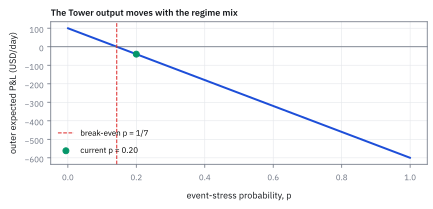

2.1 เฉลี่ยทีละสภาวะ แล้วเฉลี่ยกลับทั้งระบบ
ค่าเฉลี่ยรวมเท่ากับค่าเฉลี่ยของแต่ละกรณี ถ่วงด้วยโอกาสที่กรณีนั้นจะเกิด
กลยุทธ์หนึ่งทำกำไรเฉลี่ย \$100 ในวันที่ตลาดสงบ และขาดทุนเฉลี่ย \$600 ในวันที่มีข่าวแรง ข้อมูลย้อนหลัง (สมมติ) บอกว่าวันสงบมี 80% ของวันซื้อขาย วันข่าวแรงมี 20% หัวหน้า desk ถามสองข้อ: ก่อนรู้ว่าพรุ่งนี้เป็นวันแบบไหน เราควรคาดกำไรขาดทุนของพรุ่งนี้เท่าไร และวันข่าวแรงต้องเกิดบ่อยแค่ไหนกลยุทธ์นี้จึงขาดทุนโดยเฉลี่ย
ลองตอบก่อนเปิดเฉลย
ขาดทุนเฉลี่ย \$40 ต่อวัน เพราะ $0.8(100)+0.2(-600)=80-120=-40$ ไม่ใช่ −250 ที่ได้จากการบวกสองค่าแล้วหารสอง เพราะสองสภาวะเกิดบ่อยไม่เท่ากัน จุดคุ้มทุนอยู่ที่วันข่าวแรง 1 ใน 7 ของวัน หรือ 14.29% ตอนนี้ 20% จึงเกินจุดคุ้มทุนไปแล้ว ทั้งที่วันส่วนใหญ่เป็นวันที่กลยุทธ์ทำกำไรโดยเฉลี่ย
ภาพรวมก่อนลงสูตร
โจทย์แบบนี้คิดเป็นสองชั้น ชั้นในตอบว่า ถ้ารู้แล้วว่าเป็นวันแบบไหน กำไรเฉลี่ยเท่าไร ชั้นนอกตอบว่า วันแต่ละแบบเกิดบ่อยแค่ไหน แล้วถ่วงคำตอบชั้นในด้วยความถี่นั้น กฎที่รับรองว่าการคิดสองชั้นได้ค่าเฉลี่ยเดียวกับการเฉลี่ยทุกวันตรง ๆ ชื่อ law of iterated expectations หรือ tower property เขียนสั้น ๆ ว่า $E[Y]=E\big[E[Y\mid X]\big]$
ดูรูปด้านล่าง แท่งแต่ละแท่งกว้างเท่าสัดส่วนของวัน และสูงเท่ากำไรเฉลี่ยของวันแบบนั้น ค่าเฉลี่ยรวมคือพื้นที่สุทธิ: พื้นที่เหนือเส้นศูนย์บวก พื้นที่ใต้เส้นศูนย์ลบ แท่งแดงแคบแต่ลึก จึงหักแท่งน้ำเงินที่กว้างแต่ตื้นจนติดลบ
หน้านี้จะพิสูจน์กฎจากนิยามของโอกาสแบบมีเงื่อนไข แล้วใช้มันอีกสามแบบที่เจอจริง: ดึงสิ่งที่รู้แล้วออกนอกค่าเฉลี่ย เฉลี่ยย้อนกลับบนต้นไม้ราคาทีละงวด และวัดว่าค่าเฉลี่ยรวมไวต่อความถี่ของสภาวะแค่ไหน
รูป — ค่าเฉลี่ยรวมคือพื้นที่สุทธิของสองแท่ง
ศัพท์ที่ใช้ในหัวข้อนี้
- Conditional expectation $E[Y\mid X=x]$
- ค่าเฉลี่ยของ $Y$ เมื่อรู้แล้วว่า $X=x$ คิดจากโอกาสของ $Y$ ในกรณีนั้นกรณีเดียว ใช้ตอบว่า “ถ้าวันนี้เป็นแบบนี้ ควรคาดได้เท่าไร”
- $E[Y\mid X]$ เป็นตัวแปรสุ่ม
- ก่อนรู้ $X$ เรายังไม่รู้ว่าจะได้ค่าเฉลี่ยของกรณีไหน มันจึงเป็นฟังก์ชันของ $X$ และสุ่มตาม $X$ ใช้เป็นค่าพยากรณ์ที่ปรับตามข้อมูลที่จะได้เห็น
- Tower property (law of iterated expectations)
- เฉลี่ยค่าเฉลี่ยแบบมีเงื่อนไขอีกชั้นแล้วได้ค่าเฉลี่ยเดิม ใช้แตกโจทย์ยากเป็นกรณีย่อยที่คิดง่ายกว่า
- Taking out what is known
- สิ่งที่คำนวณได้จากข้อมูลที่รู้แล้วทำตัวเป็นค่าคงที่ จึงดึงออกนอก conditional expectation ได้ ใช้ทุกครั้งที่คำนวณกับ martingale และ Brownian motion
- การแบ่งกรณี (partition)
- ชุดของกรณีที่ไม่ทับกันและครอบคลุมทุกวัน โอกาสของทุกกรณีรวมกันได้ 1 พอดี ต้องมีก่อนจะถ่วงน้ำหนักได้ถูก
- Information set และ filtration
- $\mathcal F_n$ คือข้อมูลทั้งหมดที่รู้ ณ เวลา $n$ ซึ่งเพิ่มขึ้นเรื่อย ๆ ตามเวลา เขียน $E_n[\,\cdot\,]$ แทน “ค่าเฉลี่ยเมื่อรู้ข้อมูลถึงเวลา $n$” รายละเอียดอยู่ใน filtration และ martingale
สัญลักษณ์และหน่วย
| สัญลักษณ์ | ความหมาย | หน่วย |
|---|---|---|
| $X$ | สภาวะตลาดของวัน: calm (สงบ) หรือ stress (ข่าวแรง) | ไม่มีหน่วย |
| $Y$ | กำไรขาดทุน (P&L) ของหนึ่งวัน | ดอลลาร์ |
| $p_x$ | โอกาสที่วันหนึ่งเป็นสภาวะ $x$ | ไม่มีหน่วย |
| $m(x)$ | $E[Y\mid X=x]$ กำไรเฉลี่ยของวันแบบ $x$ | ดอลลาร์ |
| $E_n[\,\cdot\,]$ | ค่าเฉลี่ยเมื่อรู้ข้อมูลถึงเวลา $n$ | หน่วยเดียวกับสิ่งที่เฉลี่ย |
ขั้นที่ 1 — รู้สภาวะแล้วเป็นตัวเลข ยังไม่รู้เป็นตัวแปรสุ่ม
ก่อนจะเฉลี่ยข้ามสภาวะ ต้องแยกให้ออกว่าอะไรรู้แล้วและอะไรยังสุ่ม ชั้นในของโจทย์คือค่าเฉลี่ยของ $Y$ ภายในวันแบบเดียวกัน
บรรทัดแรกคือค่าเฉลี่ยธรรมดาแบบใน expected value แต่ใช้โอกาสของวันแบบ $x$ เท่านั้น ผลจึงเป็นตัวเลขหนึ่งตัวต่อหนึ่งสภาวะ: วันสงบ 100 วันข่าวแรง −600
บรรทัดที่สองคือจุดที่คนสับสน ถ้ายังไม่รู้ $X$ เราไม่รู้ว่าจะได้ 100 หรือ −600 ดังนั้น $m(X)=E[Y\mid X]$ เป็นตัวแปรสุ่มที่ได้ 100 ด้วยโอกาส 0.8 และ −600 ด้วยโอกาส 0.2 และมันไม่ใช่ $Y$ วันสงบจริงอาจกำไร \$300 หรือขาดทุน \$200 ก็ได้ ค่า 100 เป็นแค่ศูนย์กลางของวันแบบนั้น
ขั้นที่ 2 — เฉลี่ยตัวแปรสุ่ม $m(X)$ อีกชั้น
โจทย์ให้อะไรมาบ้าง: $P(X=\text{calm})=0.8$, $P(X=\text{stress})=0.2$, $m(\text{calm})=100$ และ $m(\text{stress})=-600$ ดอลลาร์ สองสภาวะไม่ทับกันและครอบคลุมทุกวัน เพราะ $0.8+0.2=1$
คำตอบ: ขาดทุนเฉลี่ย \$40 ต่อวัน ส่วนบวก 80 มาจากวันสงบ ส่วนลบ 120 มาจากวันข่าวแรง วันข่าวแรงเกิดน้อยกว่าสี่เท่า แต่ขาดทุนต่อวันลึกกว่าหกเท่า มันจึงชนะ
ตรวจเองใน 10 วินาที: คิดเป็น 100 วัน วันสงบ 80 วันมีผลรวม $80\times100=8{,}000$ ดอลลาร์ ไม่ว่าแต่ละวันจะได้เท่าไร เพราะผลรวมของกลุ่มเท่ากับจำนวนวันคูณค่าเฉลี่ยของกลุ่ม วันข่าวแรง 20 วันรวม $20\times(-600)=-12{,}000$ ทั้งหมด $-4{,}000$ หารด้วย 100 วันได้ −40 เท่ากัน
ขั้นที่ 3 — พิสูจน์ว่าเฉลี่ยสองชั้นได้ค่าเฉลี่ยเดิม
ตัวอย่างเดียวยังไม่ใช่เหตุผล ขั้นนี้แสดงว่ากฎมาจากนิยามของโอกาสแบบมีเงื่อนไขอย่างเดียว ไม่ต้องสมมติว่า $X$ กับ $Y$ อิสระกัน
บรรทัดแรกเขียนสองชั้นตรงตามคำพูด: ข้างในเฉลี่ย $Y$ ในกรณี $x$ ข้างนอกถ่วงด้วยโอกาสของกรณีนั้น บรรทัดที่สองใช้นิยามของโอกาสแบบมีเงื่อนไขจาก Bayes' theorem คือ $P(Y=y\mid X=x)\,P(X=x)=P(X=x,Y=y)$ เมื่อ $P(X=x)\gt0$
บรรทัดที่สามคือท่าที่ต้องหยุดดู: สลับลำดับการบวก จากรวมทีละกรณี $x$ เป็นรวมทีละค่า $y$ การสลับทำได้เมื่อ $E[|Y|]\lt\infty$ ซึ่งรับประกันว่าผลรวมไม่ขึ้นกับลำดับ บรรทัดที่สี่รวมโอกาสร่วมข้ามทุก $x$ ได้โอกาสของ $y$ เอง ตามนิยาม marginal distribution จึงกลับมาเป็นค่าเฉลี่ยธรรมดาของ $Y$
ตัวแปรต่อเนื่อง: ใช้ density แทนผลรวม
ถ้า $X$ และ $Y$ มี joint density $f_{X,Y}$ ให้ใช้ conditional density $f_{Y\mid X}(y\mid x)=f_{X,Y}(x,y)/f_X(x)$ ในจุดที่ $f_X(x)\gt0$ ตาม conditional distribution ขั้นตอนเหมือนกันทุกบรรทัด เปลี่ยนผลรวมเป็นอินทิกรัล และการสลับลำดับอินทิกรัลก็อาศัย $E[|Y|]\lt\infty$ เช่นกัน
ถ้า $E[|Y|]$ ไม่จำกัด เช่น Cauchy ค่าเฉลี่ยไม่มีอยู่ตั้งแต่ต้น กฎนี้จึงไม่มีอะไรให้พูดถึง ความสมมาตรของกราฟไม่ได้ทำให้ค่าเฉลี่ยเป็นศูนย์
ขั้นที่ 4 — เห็นการสลับลำดับการบวกบนตารางจริง
ตัวอย่างวันสงบกับวันข่าวแรงให้มาแค่ค่าเฉลี่ยของแต่ละกรณี ขั้นนี้ใช้ตารางโอกาสร่วมเล็ก ๆ ที่เห็นทุกช่อง เพื่อดูการสลับลำดับการบวกในบทพิสูจน์ด้านบนกับตา
โจทย์ให้อะไรมาบ้าง: ตารางสมมติ $X$ เป็น 1 หรือ 2 และ $Y$ เป็น −2 หรือ 5 โดย $P(1,-2)=0.1$, $P(1,5)=0.2$, $P(2,-2)=0.3$ และ $P(2,5)=0.4$ รวมกันได้ 1
คำตอบ: ทั้งสองทางได้ 2.2 ทางแรกเฉลี่ยในแต่ละคอลัมน์ก่อนแล้วถ่วงด้วยความกว้างของคอลัมน์ ทางที่สองรวมสีเดียวกันข้ามคอลัมน์ก่อน ได้ $P(Y=-2)=0.1+0.3=0.4$ และ $P(Y=5)=0.2+0.4=0.6$
ตรวจเองใน 10 วินาที: คูณ $0.3$ กับ $0.8/0.3$ ตัวหารหายไป เหลือ 0.8 ซึ่งคือผลรวมของโอกาสร่วมคูณค่าในคอลัมน์แรกพอดี การหักล้างตัวหารแบบนี้คือการเปลี่ยนโอกาสแบบมีเงื่อนไขกลับเป็นโอกาสร่วมในบทพิสูจน์
รูป — ตารางโอกาสร่วมที่รวมได้สองทาง
ขั้นที่ 5 — ดึงสิ่งที่รู้แล้วออกนอกค่าเฉลี่ย
หลายโจทย์ต้องเฉลี่ยผลคูณของสิ่งที่รู้แล้วกับสิ่งที่ยังสุ่ม เช่นขนาดสถานะที่ตั้งจากข้อมูลวันนี้คูณผลตอบแทนพรุ่งนี้ เราต้องการแยกสองส่วนออกจากกัน
เมื่อรู้แล้วว่า $X=x$ ค่า $g(x)$ เป็นตัวเลขตัวเดียวสำหรับทุกพจน์ในผลรวม จึงยกออกมานอกผลรวมได้เหมือนดึงค่าคงที่ออก นี่คือ taking out what is known บรรทัดสุดท้ายเอา tower property มาเฉลี่ยอีกชั้น เงื่อนไขที่ต้องมีคือ $E[|g(X)\,Y|]\lt\infty$
กับดักคือการแทน $g(X)$ ด้วย $E[g(X)]$ แล้วคูณ $E[Y]$ ซึ่งถูกเฉพาะเมื่อ $X$ กับ $Y$ อิสระกัน สิ่งที่ถูกเสมอคือคูณ $g(X)$ กับค่าเฉลี่ยของ $Y$ ในกรณีเดียวกัน แล้วจึงเฉลี่ย
ขั้นที่ 6 — Random walk สามก้าว: หา $E[S_1S_3]$
ตัวอย่างนี้เป็นต้นแบบของการคำนวณกับ Brownian motion ทุกครั้งในบทหลัง ๆ: แยกอนาคตเป็นส่วนที่รู้แล้วบวกส่วนที่ยังไม่รู้ แล้วดึงส่วนที่รู้ออก
โจทย์ให้อะไรมาบ้าง: โยนเหรียญสามครั้งอย่างอิสระ $X_i=+1$ หรือ $-1$ ด้วยโอกาสครึ่งหนึ่งเท่ากัน ตำแหน่งหลังก้าวแรก $S_1=X_1$ และหลังก้าวที่สาม $S_3=X_1+X_2+X_3$
คำตอบ: $E[S_1S_3]=1$ บรรทัดแรกใช้ว่า $X_2,X_3$ อิสระจาก $X_1$ ค่าเฉลี่ยของมันเมื่อรู้ $X_1$ จึงยังเป็นศูนย์ บรรทัดที่สองดึง $S_1$ ออกเพราะมันรู้แล้วเมื่อรู้ $X_1$
ตรวจเองใน 10 วินาที: ถ้าก้าวแรกเป็น +1 ค่า $S_3$ ของสี่เส้นทางคือ 3, 1, 1, −1 เฉลี่ย 1 และผลคูณ $S_1S_3=S_3$ เฉลี่ย 1 ถ้าก้าวแรกเป็น −1 ค่า $S_3$ คือ 1, −1, −1, −3 เฉลี่ย −1 และผลคูณ $-S_3$ เฉลี่ย 1 ทั้งแปดเส้นทางจึงเฉลี่ย 1
ในเวลาต่อเนื่อง การคำนวณเดียวกันให้ $E_0[W_{t+s}W_s]=s$ ใน ตัวอย่างคำนวณ $E_0[W_{t+s}W_s]$: เขียน $W_{t+s}=(W_{t+s}-W_s)+W_s$ ส่วนแรกเฉลี่ยศูนย์เมื่อรู้ข้อมูลถึงเวลา $s$ เหลือ $E_0[W_s^2]=s$
รูป — ทุกเส้นทางของ random walk สามก้าว
ขั้นที่ 7 — ข้อมูลซ้อนกัน: เฉลี่ยย้อนทีละงวดบนต้นไม้ราคา
ในตลาด ข้อมูลเพิ่มขึ้นทุกวัน ค่าเฉลี่ยวันนี้ของราคาอีกสองงวดคำนวณตรง ๆ ได้ หรือคำนวณค่าเฉลี่ยของงวดหน้าก่อนแล้วเฉลี่ยย้อนกลับอีกทีก็ได้ ขั้นนี้แสดงว่าสองทางให้ผลเดียวกัน ด้วยต้นไม้สมมติ: ราคาเริ่ม 100 แต่ละงวดคูณ 1.1 ด้วยโอกาส 0.6 หรือคูณ 0.9 ด้วยโอกาส 0.4 อย่างอิสระ
บรรทัดแรกคือ tower property แบบข้อมูลซ้อน: เอาค่าพยากรณ์ที่ใช้ข้อมูลมากกว่า (รู้ถึงงวด $n+1$) มาเฉลี่ยด้วยข้อมูลที่น้อยกว่า (รู้ถึงงวด $n$) จะได้ค่าพยากรณ์ของข้อมูลที่น้อยกว่า จำง่าย ๆ ว่า “ข้อมูลน้อยชนะ” เงื่อนไขคือข้อมูลต้องสะสม คือทุกอย่างที่รู้ ณ งวด $n$ ยังรู้อยู่ ณ งวด $n+1$
บรรทัดที่สองดึง $S_1$ ออกเพราะรู้แล้ว ณ งวด 1 เหลือค่าเฉลี่ยของตัวคูณ 1.02 บรรทัดที่สามเฉลี่ยย้อนอีกงวด โดยใช้ $E_0[S_1]=1.02\times100=102$ ตรวจทางตรงได้: $S_2$ เป็น 121, 99, 81 ด้วยโอกาส 0.36, 0.48, 0.16 ได้ $43.56+47.52+12.96=104.04$
ท่าเดียวกันนี้ใช้ยืด martingale จากหนึ่งงวดเป็นหลายงวด ถ้า $E_n[M_{n+1}]=M_n$ ทุก $n$ แล้ว $E_n[M_{n+2}]=E_n\big[E_{n+1}[M_{n+2}]\big]=E_n[M_{n+1}]=M_n$ (filtration และ martingale) และใช้หาค่าเฉลี่ยราคาของ GBM ที่มี drift μ ว่า $E_t[S_{t+s}]=e^{\mu s}S_t$
รูป — ต้นไม้ราคาสองงวดกับการเฉลี่ยย้อนกลับ
ขั้นที่ 8 — ค่าเฉลี่ยรวมไวต่อความถี่ของสภาวะแค่ไหน
ค่าเฉลี่ยของแต่ละสภาวะอาจประมาณได้ดี แต่ความถี่ของวันข่าวแรงเปลี่ยนตามยุค ขั้นนี้ตรึงค่าเฉลี่ยของสองสภาวะไว้ แล้วให้โอกาสวันข่าวแรง $p$ เปลี่ยน
โจทย์ให้อะไรมาบ้าง: $m(\text{calm})=100$, $m(\text{stress})=-600$ และ $P(X=\text{stress})=p$ จึงเหลือวันสงบ $1-p$
คำตอบ: ถ้าวันข่าวแรงเกิดบ่อยกว่า 1 ใน 7 ของวัน ค่าเฉลี่ยติดลบ ความชันของเส้นคือ −700 ซึ่งก็คือส่วนต่างของค่าเฉลี่ยสองสภาวะ $-600-100$ ทุก 1 จุดเปอร์เซ็นต์ที่ $p$ ผิดไป ทำให้ค่าเฉลี่ยรวมผิดไป \$7 ต่อวัน
ตรวจเองใน 10 วินาที: แทน $p=0.2$ ได้ $100-140=-40$ ตรงกับค่าเฉลี่ยรวมที่ได้ตอนต้น แทน $p=0$ ได้ 100 คือกรณีที่มีแต่วันสงบ
รูป — ค่าเฉลี่ยรวมเมื่อความถี่วันข่าวแรงเปลี่ยน

ความผิดที่ให้คำตอบผิดแบบเงียบ ๆ
หารสองแทนการถ่วงน้ำหนัก: $(100-600)/2=-250$ ต่างจากคำตอบจริง −40 อยู่ \$210 ต่อวัน เพราะให้วันข่าวแรงหนักเท่าวันสงบ ทั้งที่มันเกิดแค่ 20%
แบ่งกรณีทับกัน: ถ้าแบ่งเป็น “วันความผันผวนต่ำ” 85% เฉลี่ย +100 กับ “วันมีข่าว” 20% เฉลี่ย −600 โดยมีวันที่เข้าทั้งสองกลุ่ม 5% จะได้ $0.85(100)+0.2(-600)=-35$ ดูสมเหตุสมผลแต่น้ำหนักรวม $1.05$ นับบางวันสองครั้ง ตรวจทุกครั้งว่าโอกาสรวมเป็น 1 พอดี
ใช้ข้อมูลที่ยังไม่รู้ตอนตัดสินใจ: backtest ที่ “เทรดเฉพาะวันสงบ” ได้ $0.8\times100=+80$ ดอลลาร์ต่อวันโดยเฉลี่ย แต่ถ้าป้ายสภาวะคิดจากข้อมูลหลังปิดตลาด ตอนเช้าเรายังไม่รู้ว่าเป็นวันไหน ผลจริงคือ −40 ค่าเฉลี่ยแบบมีเงื่อนไขต้องใช้เฉพาะข้อมูลที่มีอยู่จริง ณ เวลาตัดสินใจ
แยกค่าเฉลี่ยของผลคูณ: ถ้า $E[Y\mid X]=3X$, $E[X]=2$ และ $\operatorname{Var}(X)=1$ จะได้ $E[XY]=3E[X^2]=3(1+4)=15$ ไม่ใช่ $E[X]E[Y]=2\times6=12$ สูตรผลคูณของค่าเฉลี่ยใช้ได้เฉพาะเมื่ออิสระกัน
ใช้ทำอะไรบนโต๊ะจริง
desk ใช้กฎนี้ทุกครั้งที่คิดเป็นฉากทัศน์ (scenario): กำหนดโอกาสของแต่ละสภาวะเศรษฐกิจ หากำไรขาดทุนเฉลี่ยในแต่ละสภาวะ แล้วถ่วงกลับ ฝ่ายเครดิตหาจำนวนผิดนัดเฉลี่ยของพอร์ตสินเชื่อด้วยการ condition บนปัจจัยเศรษฐกิจร่วมก่อน เพราะเมื่อรู้ปัจจัยนั้นแล้วลูกหนี้แต่ละรายแทบอิสระกัน แนวคิดนี้คือหัวใจของ Gaussian copula และการตั้งราคา CDO ส่วนการตั้งราคา option บนต้นไม้ก็คือการเฉลี่ยย้อนทีละงวดแบบรูปต้นไม้ด้านบน
โจทย์ตรวจความเข้าใจ
1. ถ้าโอกาสวันข่าวแรงลดเหลือ 0.1 ค่าเฉลี่ยรวมเป็นเท่าไร และต่างจากกรณีที่รู้แน่ว่าพรุ่งนี้เป็นวันสงบอย่างไร
เฉลย
$0.9(100)+0.1(-600)=90-60=30$ ดอลลาร์ต่อวัน หรือใช้เส้นตรง $100-700(0.1)=30$ แต่ถ้ารู้แน่ว่าพรุ่งนี้สงบ ค่าเฉลี่ยที่ควรใช้คือ $E[Y\mid X=\text{calm}]=100$ คำตอบต่างกันเพราะข้อมูลที่ใช้ condition ต่างกัน ไม่ใช่เพราะกลยุทธ์เปลี่ยน
2. กำหนด $E[Y\mid X]=3X$, $E[X]=2$ และ $\operatorname{Var}(X)=1$ จงหา $E[Y]$ และ $E[XY]$
เฉลย
tower property ให้ $E[Y]=E[3X]=3(2)=6$ การดึงสิ่งที่รู้ออกให้ $E[XY]=E\big[X\,E[Y\mid X]\big]=E[3X^2]$ และจาก variance $E[X^2]=\operatorname{Var}(X)+(E[X])^2=1+4=5$ จึงได้ $E[XY]=15$ ไม่ใช่ $E[X]E[Y]=12$ ส่วนต่าง 3 คือ $\operatorname{Cov}(X,Y)=3\operatorname{Var}(X)$
3. กลยุทธ์ momentum (สมมติ) มีสามสภาวะ: ความผันผวนต่ำ โอกาส 0.55 ผลตอบแทนเฉลี่ย 0.9% ต่อเดือน ปกติ 0.32 และ 0.3% วิกฤต 0.13 และ −2.1% จงหาผลตอบแทนเฉลี่ยต่อเดือน และวิกฤตกินส่วนบวกไปกี่เปอร์เซ็นต์
เฉลย
โอกาสรวม $0.55+0.32+0.13=1$ ส่วนร่วมคือ $0.55(0.9)=0.495$, $0.32(0.3)=0.096$ และ $0.13(-2.1)=-0.273$ จุดเปอร์เซ็นต์ รวม $0.318\%$ ต่อเดือน ส่วนบวกรวม $0.591$ วิกฤตกินไป $0.273/0.591\approx46.2\%$ ของส่วนบวก ทั้งที่เกิดแค่ 13% ของเดือน
คำนวณซ้ำด้วย JavaScript
โค้ดนี้คำนวณ −40 ทั้งสองทาง ตรวจตารางโอกาสร่วม ไล่ครบแปดเส้นทางของ random walk ตรวจต้นไม้ราคา และหาจุดคุ้มทุน
เปิดดูโค้ด
const p = [0.8, 0.2], m = [100, -600];
const tower = p[0] * m[0] + p[1] * m[1]; // -40
const naive = (m[0] + m[1]) / 2; // -250 (wrong)
const breakEven = 1 / 7; // 0.142857
// joint table: rows X = 1, 2 ; columns Y = -2, 5
const joint = [[0.1, 0.2], [0.3, 0.4]], y = [-2, 5];
let viaRows = 0, direct = 0;
for (const row of joint) {
const px = row[0] + row[1];
const mx = (row[0] * y[0] + row[1] * y[1]) / px; // E[Y | X]
viaRows += px * mx;
}
for (let j = 0; j < 2; j++) direct += (joint[0][j] + joint[1][j]) * y[j];
// random walk: E[S1 * S3] over 8 equally likely paths
let s1s3 = 0;
for (const a of [1, -1]) for (const b of [1, -1]) for (const c of [1, -1])
s1s3 += a * (a + b + c) / 8; // 1
// two-period tree: x1.1 with prob 0.6, x0.9 with prob 0.4
const g = 0.6 * 1.1 + 0.4 * 0.9; // 1.02
const backward = 100 * g * g; // 104.04
const straight = 0.36 * 121 + 0.48 * 99 + 0.16 * 81;
const momentum = 0.55 * 0.9 + 0.32 * 0.3 + 0.13 * -2.1; // 0.318
console.log({tower, naive, breakEven, viaRows, direct, s1s3,
backward, straight, momentum});สิ่งที่ควรตอบได้หลังอ่าน
- $E[Y\mid X=x]$ เป็นตัวเลข แต่ $E[Y\mid X]$ เป็นตัวแปรสุ่มที่ขึ้นกับ $X$ และไม่ใช่ $Y$
- $E[Y]=E\big[E[Y\mid X]\big]$ ใช้ได้เมื่อ $E[|Y|]\lt\infty$ โดยไม่ต้องให้ $X$ กับ $Y$ อิสระกัน วันสงบ 80% กับวันข่าวแรง 20% ให้ −40 ไม่ใช่ −250
- สิ่งที่รู้แล้วดึงออกนอกค่าเฉลี่ยได้: $E[g(X)Y]=E\big[g(X)E[Y\mid X]\big]$ ซึ่งให้ $E[S_1S_3]=1$ ใน random walk
- เมื่อข้อมูลซ้อนกัน ค่าเฉลี่ยย้อนทีละงวดได้ผลเดียวกับการเฉลี่ยตรง ๆ เช่น 104.04 บนต้นไม้ราคา
- ค่าเฉลี่ยรวมไวต่อความถี่ของสภาวะด้วยอัตราเท่ากับส่วนต่างของค่าเฉลี่ยรายสภาวะ
หน้าถัดไป law of total variance ใช้กฎเดียวกันกับ $Y^2$ แล้วแยกความผันผวนรวมเป็นสองส่วน: การแกว่งภายในแต่ละสภาวะ และการที่ค่าเฉลี่ยของแต่ละสภาวะอยู่ห่างกัน